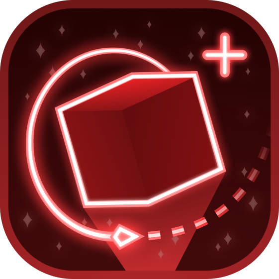
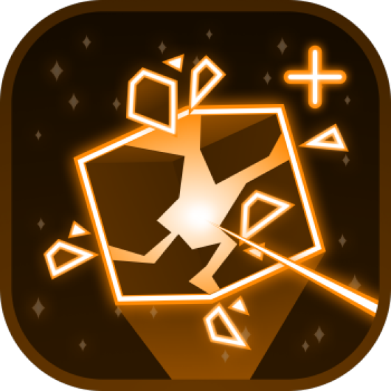
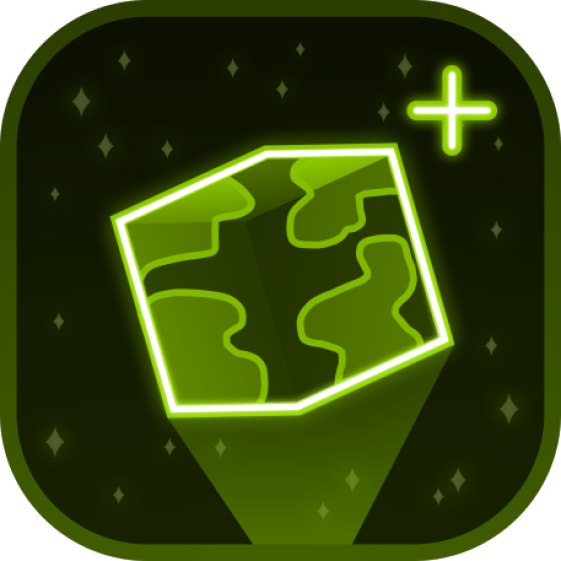
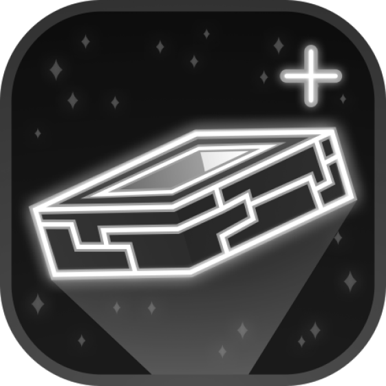

Beautifully Crafted Star Scapes
Explore the Solar System, Alpha Centauri, B1400 Centauri, and Gaia BH-1, each rendered as its own unique starscape.
The Skies were never the Ceiling
A beautifully crafted Minecraft space mod.
There is a place for everyone.

Realio
Mayhem
Trappist
Machine WorldExplore the Solar System, Alpha Centauri, B1400 Centauri, and Gaia BH-1, each rendered as its own unique starscape.
Physically fly through space yourself, no menus or button clicks. Get too close to a black hole and see what happens.
Leave the overworld behind and chart a course through custom dimensions and planets.
Dust storms, meteor showers, and atmospheric effects tuned to each world you visit.
The following spec sheet considers only Cosmic Horizons at its suggested settings, render distance 6. In space, everything renders regardless of render distance.
60–230 FPS
150–300 FPS
Stable 400–450 FPS